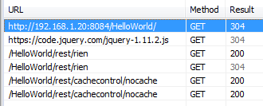

Cache ou pas cache
Le cache 2.0
Par Florent FREMONT
Sommaire
- Verbes HTTP
- La vie sans cache
- Please, pas de cache !
- Le cache mais quand ?
- Cache par expiration
- Cache par validation
- Un petit mixte :s
- Références
Verbes HTTP

La vie sans cache
- IE 10 : en cache
- Chrome & Firefox : sans cache
- Conclusion
La vie sans cache
IE 10 : en cache
La réponse HTTP est automatiquement mise en cache malgré l'absence d'entête de cache


La vie sans cache
Chrome & Firefox : sans cache
La réponse HTTP n'est pas mise en cache

La vie sans cache
Conclusion
Il faut définir explicitement le cache
Please, pas de cache !
- Old school : HTTP 1.0
- HTTP 1.1
- En pratique
Please, pas de cache !
Old school : HTTP 1.0
- Entête de la requête
- Pragma : no-cache
- Entête de la réponse
- Pragma : no-cache
- Expires : 0
Please, pas de cache !
HTTP 1.1
- Cache-control
- no-cache
- no-store
- must-revalidate
Please, pas de cache !
HTTP 1.1
Cache-control : no-cache
‘no-cache’ indique que la réponse renvoyée ne peut pas être utilisée pour satisfaire une requête ultérieure à la même URL sans avoir au préalable vérifié auprès du serveur si la réponse a changé. En conséquence, si un jeton de validation adapté (ETag) est présent, l’élément no-cache induit un aller-retour pour valider la réponse mise en cache, mais peut éliminer le téléchargement si la ressource n’a pas changé.
Please, pas de cache !
HTTP 1.1
Cache-control : no-store
‘no-store’ est beaucoup plus simple, puisqu’il interdit au navigateur et à tout cache intermédiaire de stocker toute version de la réponse renvoyée. C’est la cas par exemple des réponses qui contiennent des données confidentielles, personnelles ou bancaires. Chaque fois que l’utilisateur demande cet élément, une requête est envoyée au serveur et une réponse complète est téléchargée.
Please, pas de cache !
HTTP 1.1
Naigateurs
- Chrome & Firefox : 200 Ok
- IE 10 : 200 Ok 
Please, pas de cache !
En pratique
@GET
@Path("nocache")
public Response nocache(){
javax.ws.rs.core.CacheControl cache = new javax.ws.rs.core.CacheControl();
cache.setMustRevalidate(true);
cache.setNoCache(true);
cache.setNoStore(true);
cache.setPrivate(false);
return Response.ok("Pas de cache").cacheControl(cache).build();
}
Le cache mais quand ?

Cache par expiration
- Cache-control & max-age
- En pratique
Cache par expiration
max-age ?
Cette directive indique la durée maximale en secondes pendant laquelle la réponse récupérée peut être réutilisée, à partir de l’envoi de la requête. Par exemple, max-age=60 indique que la réponse peut être mise en cache et réutilisée pendant les 60 secondes qui suivent.